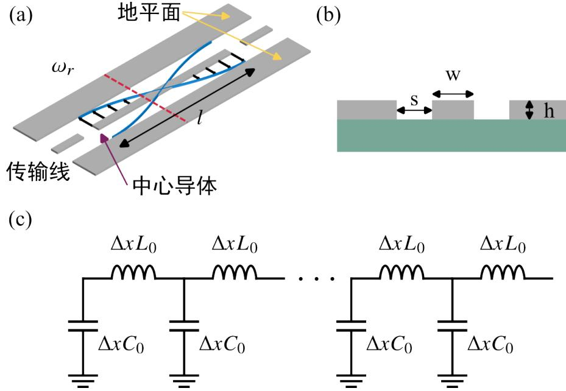
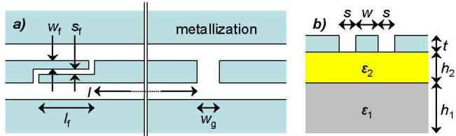
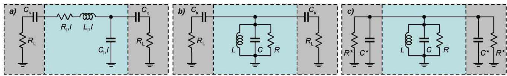
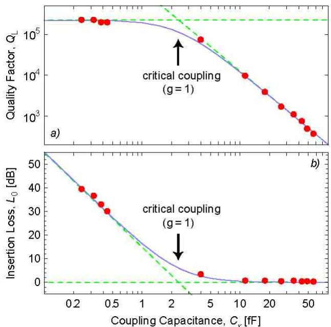

物理图像
在电路量子电动力学（circuit QED, cQED）中，“腔”对应一根被边界条件截断的微波传输结构：电磁波在两个端点之间反射、叠加成驻波，只在满足整数倍半波长的离散频率上有非平凡解。每一个解就是一个谐振模式（mode），其中心频率 、总耗散率 、外耦合率 与内耗散率 描述这个模式如何与外界交换能量。半导体量子点中的电荷或自旋自由度通过电场与腔内真空涨落耦合，从而以单个或几个微波光子的形式进入电路。
对门控半导体量子点而言，谐振腔既是测量探针（通过反射或透射谱读取电荷态），也是相干接口（在强耦合下与量子点交换激发）；尺度从片上 高阻抗 集总元件到全封闭的 3D 金属腔体，覆盖从百纳米到厘米的多个量级。

半波长共面波导透射腔结构、横截面与等效电路
三类实现
按几何尺度与电磁模式划分，半导体 cQED 实验中常见的微波腔有三类：
- 集总 LC 谐振器：电感 与电容 在物理上可分辨，物理尺寸远小于工作波长。优点是模式体积小、零点电场强，但工艺容差与寄生参数敏感，多用于参量放大器、滤波电路等辅助器件；
- 分布式传输线腔：共面波导（coplanar waveguide，CPW）或带状线（stripline）被截取为有限长度 ，两端开路或一端短路形成驻波。典型基模是 透射腔或 反射腔，频率 ，与电长度反比；
- 三维腔体：用整块超导金属（铝、铌）铣出矩形或圆柱形空腔，TE/TM 模式由腔长 决定 。介电参与度低、无大电流密度的细线结构， 值可达 –，但与半导体器件的直流与射频引线集成更难。
传输线腔的材料除了铝、铌，惰性氮化物也是活跃方向：溅射 TiN 膜谐振腔在 100 mK 的损耗角已做到 –（随溅射温度/压强系统变化），且全部工艺可平移到硅晶圆级 CMOS 流程，见TiN/AlN 全氮化物超导组件。
这三类在本站论文中作为代表实现。
集总模型与量子化
最简的描述是从集总 LC 电路出发。设电容 储存电能 ，电感 储存磁能 。取广义坐标 （电感磁通）与共轭动量 （电容电荷），泊松括号 直接量子化为 。引入满足 的湮灭、产生算符后
其中
零点能通常略去，写成 。在 Jaynes–Cummings 模型中，这正是腔的”单模玻色子”描述。
集总模型同样适用于描述有载电路：将损耗电阻 并入 RLC 回路，得到无载品质因数 ；与外负载 耦合后，引入外部品质因数 ，有载 满足
定义耦合系数 ： 为过耦合（光子快速漏出，适于快速读出）， 为欠耦合（ 高，适于量子存储）， 为临界耦合（最大功率传输）。
分布式传输线谐振腔
模式与频率
把一根长度为 、单位长度电容 、电感 的传输线两端开路，电磁场在 内形成驻波：
的基模为半波长 模式，对应两端开路透射腔；一端开路一端短路时基模变为 （反射腔），更高阶模为 。CPW 的几何电容、电感可由保角映射得到
其中 由中心导体宽 与地间距 决定， 在衬底远厚于膜厚的条件下成立。
特征阻抗
超导材料制成的传输线 ，特征阻抗化为
商用微波器件为 ，因此传统 CPW 腔也按 设计以避免反射与失真；但半导体 cQED 中需要偏离此惯例——腔电压的零点涨落正比于 ，提高 即放大量子点所感受到的真空电场（详见电荷–光子耦合）。这是高阻抗谐振腔路线的理论根源。
输入阻抗与等效电路
对于长度为 、终端开路的传输线，定义 ，输入阻抗
当 时，，对应 谐振，与并联 RLC 等效；当终端短路、 时也给出类似的并联谐振。这说明分布式传输线在某一频率附近的响应完全由一个集总 RLC 模型描述，其参数为 ，，，其中 与衰减系数相关。在缝耦合或电容耦合的情况下，缝隙的阻抗倒相作用会让等效电路由并联 RLC 变为串联 RLC。
三维腔体
矩形波导两端短路即可形成矩形 3D 谐振腔。设波导宽边 、窄边 、长度 ，TE/TM 模式频率
散射矩阵与端口网络
实际测量的对象是端口的散射参数 。对单端口反射腔，由输入–输出理论可得反射系数
对双端口透射腔
其中 。当耦合电容 很小时，，有载品质因数可近似为 ，即耦合电容越大、 越低。当比特也耦合到腔时，散射参数需引入比特磁化率 的修正：
其中 ，。当 时回到无加载谐振腔的洛伦兹响应。
耦合电容工程：从 C_κ 标定到 Q_L 设计
外耦合 （即 ）不是测量出来再接受的事实，而是用耦合电容设计出来的自由度。Göppl 等人对 2–9 GHz 一批 Al CPW 腔（中心导体 m、缝隙 m，高阻硅衬底 550 nm 热氧化层）做了系统标定：耦合元件分两类——间隙电容（宽度 –m， 约 0.24–0.44 fF）与指形电容（1–8 对指，指长 m、指宽/间距 3.3 μm， 约 4–56 fF），在 2.3 GHz 基频器件上把 从 连续铺到 。
集总 LCR 模型给出设计规律：把 与馈线 的串联经 Norton 变换映射为并联的 、，过耦合区（）的有载品质因数
其中 、 是映射后的等效集总参数、 是第 模角频率—— 随耦合电容平方反比下降；欠耦合区（）则饱和在内禀品质因数 （20 mK、本征损耗极限）。同一套模型同时预言频率牵引（ 改变谐振频率）与插入损耗，ABCD 传输矩阵法更覆盖全谱（含高次谐波模式），两模型对全部 12 只器件的共振频率、品质因数与插损一致描述——设计即预言。
这套标定直接对应两类应用的分工：过耦合（大 、低 、宽带）用于腔内比特态的快速测量；欠耦合（小 、、长光子寿命）用于把腔当光子存储器。

_电容耦合 CPW 腔的版图与截面：左侧指形电容（多对指交叠增大）、右侧间隙电容（小
）；中心导体宽
µm、缝隙
µm，双层衬底上铝膜光刻成型。图源：Göppl et al. (2008), Fig. 1。_

_分布参数到集总 LCR 的模型映射：对称耦合传输线腔等效为并联 LCR 振子，与
的串联经 Norton 变换变为并联
、
——品质因数下降与频率牵引由此统一进入集总设计公式。图源：Göppl et al. (2008), Fig. 5。_

_对耦合电容
的实验标定（红点）与模型预言（蓝线）：过耦合区沿
虚线下降（小电容端饱和于
），0.24–56.4 fF 的电容设计覆盖约三个量级的
。图源：Göppl et al. (2008), Fig. 6(a)。_
损耗通道与品质因数
总耗散 中，外耦合 由耦合电容决定（，因此阻抗越高、同样耦合电容下外耦合越强）。内耗散的主要通道是
- 超导准粒子损耗：温度升高或磁通抑制超导能隙时增加；
- 介质与界面二能级系统（TLS）：电极–衬底界面、隧穿结氧化层中的非晶态缺陷，在低温下饱和为 – 的介电损耗；
- 微波辐射与泄漏：长直流电极在微波频段如同一根天线，把腔内能量辐射进自由空间或邻近电路，常用片上Purcell 滤波结构抑制。
对常规 CPW 腔， 在 – 之间；3D 腔可达 –；高阻抗动态电感腔（如 NbTiN、TiN）通常 ；SQUID 阵列腔受结参数离散与氧化层缺陷影响，–。本站论文中具体的内耗散/外耗散值由矢量网络分析仪拟合散射谱直接得到（如论文双量子点电荷比特实验中 ，、 数十 MHz 量级）。
参数与量级
本站论文中报道的实际腔参数（来源标记见论文依据）：
| 腔型 | 关键参数 | 来源 | |||
|---|---|---|---|---|---|
| 标准 CPW 透射腔 | 50 Ω | 5.92 GHz | κᵢ/2π ≈ 数十 MHz，κₑ 可调 | 半波长开路，CPW 标准阻抗 | |
| 反射式超导腔（铝制） | 50 Ω | 6.045 GHz | κᵢ/2π ≈ 11.3 MHz，κₑ/2π ≈ 数十 MHz | 半波长双线，奇模激励 | |
| 三维铝腔（20 mK） | — | 9.45 GHz | 全封闭 | ||
| 双端口透射腔耦合两个 DQD | 50 Ω | 6.53 GHz | κᵢ/2π=30.0 MHz | 测得 | |
| 高阻抗 SQUID 阵列腔 | ~1 kΩ | 磁通可调 | 30–60 MHz | 38 个 SQUID 串联 | |
| 高阻抗 NbTiN 腔 | ~2 kΩ | ~6 GHz | ~11 MHz | w=0.32 µm，11 nm 膜 | |
| 高阻抗 TiN λ/2 腔 | ~3.5 kΩ | 4.993 GHz | 2.2 MHz | 10 nm 膜，Lₖ=265.9 pH/□ | |
| 高阻抗 TiN 腔（7.3 GHz） | ~2.5 kΩ | 7.332 GHz | 5.13 MHz | 用于自旋–光子耦合 | |
| Göppl 标定型 CPW 腔（2.3 GHz 基频） | 50 Ω 级 | 2.27–2.35 GHz | – | 0.24（间隙）–56.4 fF（8+8 指）； | Göppl 2008 |
| Göppl 器件内禀品质因数 | — | — | （20 mK） | 欠耦合饱和值 | Göppl 2008 |
耦合强度的收益与之同步：50 Ω CPW 透射腔中 – 停留在弱耦合区；SQUID 阵列腔把 GaAs 双量子点的耦合提升到 ；3.5 kΩ TiN 腔支撑了 的电荷比特强耦合。
实验特征与典型应用
微波谐振腔是半导体 cQED 实验中几乎唯一的读出与耦合通道。典型应用如下：
- 反射式谐振测量量子点复导纳：将量子点等效为与谐振腔耦合的复阻抗 ，通过反射谱的幅值与相位拟合提取 、，从而分辨电荷稳定图中的隧穿线（改变 ）与共隧穿线（改变 ）。 用此方法在锗硅纳米线空穴量子点上测得 ；
- 色散读出：在 的大失谐区，腔频按 移动，测量腔相位即可读出比特态而不破坏它，是色散读出的基础；
- 真空 Rabi 劈裂与强耦合判定：比特频率穿过腔频时，谱线出现最小间距 的避免交叉，要求 ，对应强耦合判据；
- 腔介导远程耦合：两比特共享同一腔模时，经虚光子交换得到有效相互作用 ，把近邻（百纳米）相互作用扩展到毫米尺度，对应腔介导远程耦合；
- 电荷稳定图与栅极传感：把腔响应直接作为快速电荷探针，不必额外放置QPC/SET 传感器，对应栅极射频传感。
与其他概念的关系
- 哈密顿量与全部能级结构见电路量子电动力学与Jaynes–Cummings 模型；共振极限的标志是真空 Rabi 劈裂，进入它的判据是强耦合；
- 大失谐极限支撑色散读出与 QND 测量；强周期驱动下的修饰谱由Floquet 动力学描述；
- 腔侧的实现路线：常规微波谐振腔、提升耦合的高阻抗谐振腔与可调频的SQUID 阵列谐振腔；把谐振器连成网络则升级为人工紧束缚固体——布局图的线图自带 −2 平带，见线图格子平带与 cQED 格子；
- 比特侧的耦合通道：电荷–光子耦合（强偶极、快退相干）与自旋–光子耦合（微磁体、自旋轨道、翻转模式等电荷混合机制）；
- 多比特共享同一腔模则构成腔介导远程耦合的硬件基础；
- 性能瓶颈来自电荷噪声与界面缺陷，常见平台包括GaAs/AlGaAs、Si/SiGe、Si-MOS 与锗棚顶纳米线。
- 需要特斯拉级磁场（自旋/拓扑比特）的场景须改用耐磁场超导谐振腔：涡旋钉扎与薄膜几何把 保持到面内 6 T。
参考文献
- Göppl, M., Fragner, A., Baur, M., Bianchetti, R., Filipp, S., Fink, J. M., Leek, P. J., Puebla, G., Steffen, L., Wallraff, A. Coplanar waveguide resonators for circuit quantum electrodynamics. Journal of Applied Physics 104, 113904 (2008). DOI: 10.1063/1.3010859；arXiv:0807.4094（QAtlas 缓存：0807.4094）。
完整文献库（含各篇站内全文页）见 参考文献库。